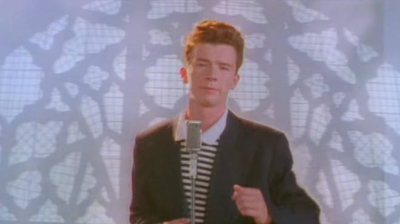

Richard Paul Astley
Richard Paul Astley (born 6 February 1966) is an English singer, songwriter and radio personality. He rose to fame through his association with the production trio Stock Aitken Waterman; his 1987 recording of their song "Never Gonna Give You Up" was a number 1 hit single in 25 countries, winning the 1988 Brit Award for Best British Single. By the time of his retirement in 1993, Astley had sold approximately 40 million records worldwide.Astley made a comeback in 2007, becoming an Internet phenomenon when the music video for "Never Gonna Give You Up" became integral to the meme known as "rickrolling". Astley was voted "Best Act Ever" by Internet users at the MTV Europe Music Awards 2008, and his 2016 album 50 debuted in the UK at No. 1
Website
YouTube